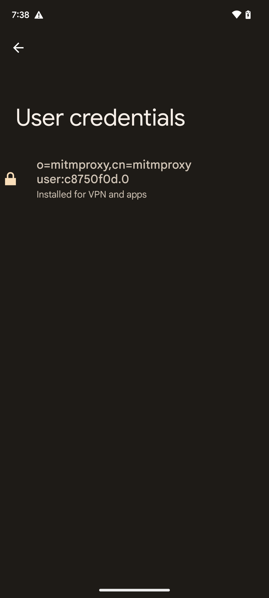

Introduction
This Python package enables the real-time capture and analysis of Instagram traffic from an Android device. It intercepts and stores all media (images and videos) being served to the connected phone, ensuring complete and accurate data collection. Additionally, it generates concise text summaries of video content to facilitate streamlined analysis. Designed specifically for psychology researchers, this tool supports studies on the psychological effects of social media by providing an efficient and comprehensive method for content monitoring and archival.
Installation
Follow the steps to Install ContentSave Package on your computer
Prerequisites
Python 3.6 or higher installed
Steps to Install and Run the Package
Clone the Repository:
git clone https://github.com/PrincipledInterfaces/ContentSavePackage.git
Navigate to the Project Directory:
cd ContentSavePackage
Create a Virtual Environment:
python -m venv venv
Activate the Virtual Environment:
For Windows:
venv\Scripts\activate
For Apple:
source venv\bin\activate
Install Dependencies:
pip install -r requirements.txt
Install the Package:
pip install .
Verify Installation:
pip listThis will display a list of installed packages, including ContentSavePackage and its dependencies.
Setup YOLO Model Files:
Before running the package, you will need to download the YOLO model files (to run the video summarization script):
Create the models/ directory at the root of the project:
cd ContentSavePackage\contentSavePackage\ContentSavePackage
Download yolov3.weights from here and place it in the `models/` directory.
Download yolov3.cfg:
curl -o yolov3.cfg https://github.com/ajk-github/ContentSaveWeb/blob/main/model-weights/yolov3.cfgIf the command does not work, download it manually from here .
Download coco.names:
curl -o coco.names https://github.com/ajk-github/ContentSaveWeb/blob/main/model-weights/coco.namesIf the command does not work, download it manually from here .
Run the Package:
contentsaveRun this in the location where you want the proxied data to be stored
Certificate Unpinned Apps
These Apps have Certificate pinning disabled (Choose the one which works for your phones chip architecture, just google what your phone has)
Instagram
TikTok
Connecting contentSave
Follow these steps to connect your mobile device and computer for contenSave:
Connect your mobile device and computer to the same network.
Find the IP address of your computer.
Run contenSave through the terminal.
On your mobile device:
Open Settings and go to Network and Internet → WiFi .
Press the Settings icon next to the WiFi name.
Press the pen icon at the top of the screen.
Click on Advanced Options → Proxy → Manual .
Enter your computer's IP address
in the Proxy Hostname field and 8080 in the Proxy Port field.
Save the changes.
Open Chrome and go to mitm.it .
Click on Get mitmproxy-ca-cert.pem under the appropriate heading.
Go to Settings → Security → Encryption and Credentials .
Click on Install a Certificate .
Click on CA Certificate and install the downloaded certificate.
The Downloaded Certificate should show under User Credentials

Usage
Install the package on your computer and the certificate-unpinned app on your phone.
Use the command contentsave to run the package. Make sure to execute this command in the location where you want to store the data.
Once the package is running, all content displayed on the app will be stored in real time on your computer.
Videos stored by the package are summarized automatically using the inbuilt summarization model.
Watch the video below to see a demo of how to use the package:
Your browser does not support the video tag.
Examples
Here are some common use cases for contenSave:
Collecting Instagram data.
Scraping TikTok videos.
Exporting data to CSV or JSON files.
FAQ
Find answers to frequently asked questions about contenSave.